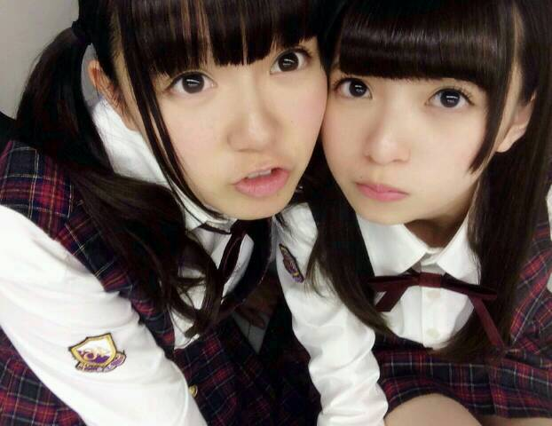
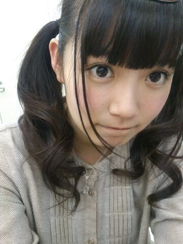
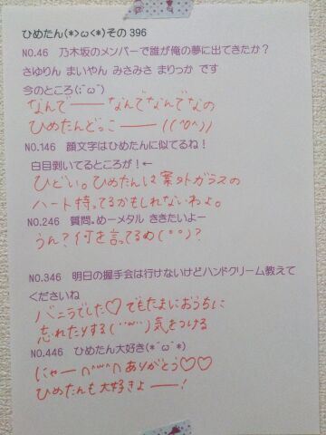

| 2014/04 29 Tue | ひめたん-OoO-その439 |
ぶちゅーーーっとな

bayfm公開生放送＼(^o^)／
会場にいらしてくださった方
聴いてくださった方
ありがとうございました！
え、この世の中には
ゴールデンウィークで10連休とかって人も
いるんですってね！びっくりよ時が経つの早いよー
気づいたら片想い→まいまい
制服のマネキン→まっちゅん
おいでシャンプー→せっちゃん
のポジションを努めました(｀・ω・´)
あのさ
こーゆー時の「つとめた」は
「努めた」であってる？教えて賢い人ー
おいでシャンプーしてたら
急に雨がざーって降ってきて
おうちで聴いてる方はなんだなんだって
思っちゃったかもしれないけど
なんか結構大粒の雨でねー
会場に来てくださったみなさん
風邪ひかなかったですかねー(´・ω・｀)
そしてラジオの前のあなた
ぎゃんぎゃん言っちゃってごめんねー
ほら、ちょっとテンションあがっちゃって。
それから、最高に可愛い告白とやらをしました
うん、この話題は
さらりとスルーしてもらおう
そんな感じで
楽しい60分だったと思います！
たくさんの人が来てくださって嬉しかったよー
せっかくの祝日にわざわざありがとうね( ^O^ )
楽しいゴールデンウィークを！
乃木のの聴いて下さってありがとうー
りぼんのコレクションは
あれ撮ったあとでお誕生日してもらったから
もうちょっとあります(〃ω〃)
100個になったら報告するねー
年内に目標達成できるかもんふふんふふふ
なんてゆーか楽しかったなあイタいーず。
今日もさんにんで写メ撮ったよー
みんなが忘れたくらいに貼るねー♪
最近ひめたんの身体が
らりん (永島聖羅ちゃん)にかまちょコールしてる。
らりー＼(^O^)／ーん
あーあと きいちゃん (北野日奈子ちゃん)と
仲良いんですよ。らぶらぶなのよ
今度写メ撮ろーっとー待っててー

触角が喧嘩してる。

 ひめたんは授業中、眠たいときどうする☆
ひめたんは授業中、眠たいときどうする☆
あと、ねちゃって注意されたこととかあるぅ笑
寝ます＼(^o^)／＼(^o^)／＼(^o^)／
ひめたんがお世話になってきた先生方は
注意するひとじゃなかったから
あんま怒られたことはないんだよね
それで休憩時間にノートをガン写し......
ひめたんは消しゴムが小さくなってきたら、
紙のケースはどうする？
因みに僕はハサミでケースを切って使います。
あーもーこれ！！
共感できすぎてもう／(^o^)＼
ハサミでケースを切るんだけど
消す側の四つ角も切るの！
伝わる？ねーこれ伝わるかな？
ひめたんが夢に出てきたら、
出演料いくら取られる？
高過ぎたら困る...
夢への出演料プライスレス！
お金で買えない価値がある！
買えるものはマ......おっとっと
 18さい ひめたんのびーむは威力が
18さい ひめたんのびーむは威力が
18倍になったって本当ですかーー！？
ひめたん18さいになって
最近気づいてしまいました
ひめたんびーむは心の広い人にしか
効かないんだということを。
ナカダが好きなバターin納豆は
ひめたんも好きなの？
納豆が好きじゃないんだよね(´・ω・｀)
ひめたんは納豆食べれんのです
食わず嫌いってやつ。
うちの高校の規則でリボンは黒か茶な紺の
単色じゃないといけないんだけど、
ひめたんならどれにする？
りぼんしないでラフにシャツのボタン空けるのとか
ひめたん似合わないんだよねー
りぼんってあのフォルムがかわいいんだから
おとなしい色でも全然問題ないと思うよ♪
ひめたんの日記の
コメント欄下２ケタに46を踏んだ方へ
手書きでコメ返するコーナー
＼ ひめたん46 ／

いつもたくさんのコメント
ありがとうございます
うーううっううっう(´；ω；｀)
なんかね、いろんなこと書いてくれてて
ほんとに嬉しいんだけどね
ひめたんのパフォーマンス好きだよーって
言ってくださるのがほんとに嬉しいの。
なんかー
アンダーライブのリハを頑張ってる
真っ最中なんだけどね
歌を頑張りたいなーと思って
歌えば歌うほど
自分の歌が嫌になるんだよね(´；ω；｀)
いやもともと好きじゃないけどさ
うー頑張らなきゃー......
(＊´・ω・＊)
コメント(677)
2014/04/29 23:54